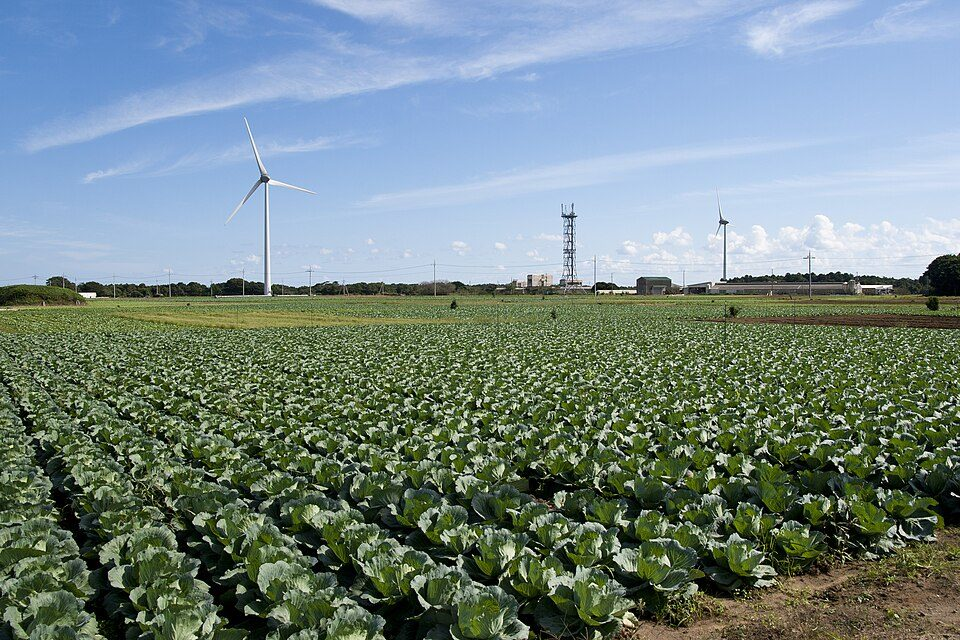
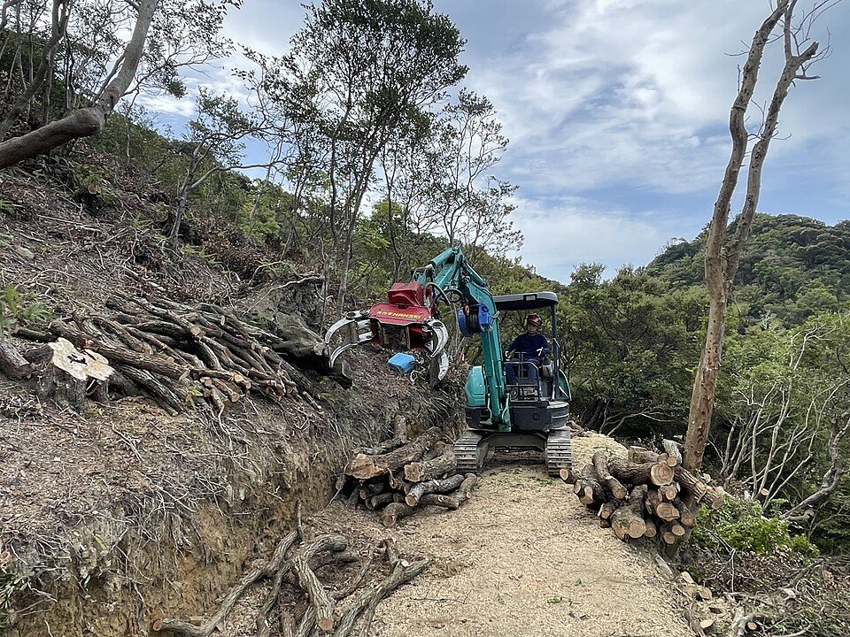
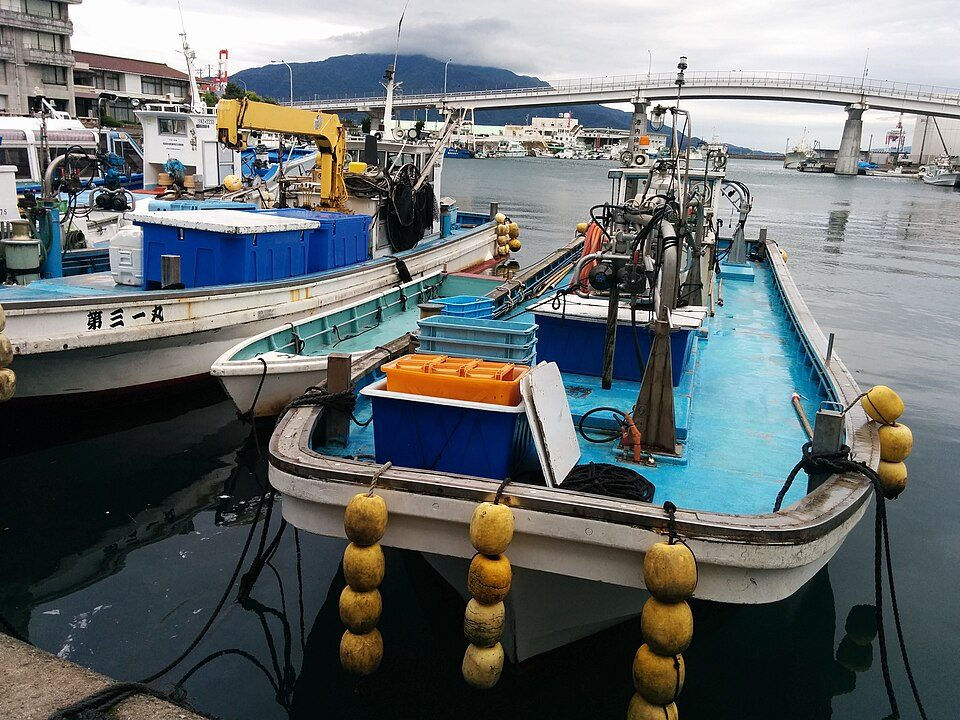

大人が参加できる職業体験：地方で働く、農林漁業、福祉の職場体験、トライアル雇用（2026年版）
要点まとめ
転職や地方への移住、副業を考えるとき、いきなり決めるより、短い期間その仕事を試してみたいと思う人は多いはずです。国や自治体には、大人が仕事を体験できる仕組みがいくつもあります。この記事では、どんな仕事を、どこで、いくらで、何日くらい体験できるかを、総務省・厚生労働省・自治体などの公式情報でまとめました。
試してから決める、という選び方
移住の相談は、2025年に初めて7万件を超えた
ふるさと回帰支援センターへの移住相談は73,003件
ふるさと回帰支援センターへの2025年の移住相談は73,003件で、前の年より18.3%増え、5年続けて過去最高になりました[7]。地方で暮らす・働くことへの関心は高まっています（筆者の見解）。
| 仕組み | 期間 | 本人の費用・収入 |
|---|---|---|
| ふるさとワーキングホリデー | おおむね2週間〜1か月 | 働いて収入を得る[1] |
| おためし地域おこし協力隊 | 主に2泊3日 | 自治体による[2] |
| 地域おこし協力隊インターン | 2週間〜3か月 | 自治体による[2] |
| 農業体験（チャレンジ・ザ・農業体験） | 1日〜3か月 | 有料（5日間31,200円など）[3] |
| 林業就業支援講習 | コースによる | 受講料は原則無料[5] |
| 福祉・介護の職場体験（愛知県） | 一般は3〜5日間 | 無料（交通費・食費は自己負担）[6] |
| トライアル雇用 | 原則3か月 | 雇われて給料を得る[8] |
| 民間の職業体験（仕事旅行） | 1時間〜数日 | 5,000〜22,000円（税込）など[9] |
地方で働いてみる
ふるさとワーキングホリデー：働きながら地方で暮らす
おおむね2週間〜1か月、地方に住んで働き、収入を得る
総務省のふるさとワーキングホリデーは、都市部の若者などがおおむね2週間から1か月、地方に滞在して働き、収入を得ながら地域の人と交流する仕組みです[1]。働き先の例は、農業、旅館・ホテル、酒造業、製造業、観光業などです[1]。2016年4月から2026年3月までに6,856人が参加し、2025年度は59団体で877人が参加しました[1]。
おためし協力隊と協力隊インターン：応募の前に体験する
おためしは主に2泊3日、インターンは2週間〜3か月
地域おこし協力隊に応募する前に、実際の活動や暮らしを体験できる仕組みとして、「おためし地域おこし協力隊」（主に2泊3日）と「地域おこし協力隊インターン」（2週間〜3か月）があります[2]。どちらも移住の条件はありません[2]。国が自治体の経費を支える仕組みでは、参加者が現地まで行く往復の旅費は対象外とされています[11]。
その先には、地域おこし協力隊
協力隊は2025年度に8,196人。任期はおおむね1〜3年
地域おこし協力隊は、都市から地方に移り住み、地域の活動に取り組む仕組みで、任期はおおむね1年から3年です[12]。隊員は2024年度7,910人、2025年度8,196人で、任期を終えた人の約70%がその地域に住み続けています[12][13]。
農業・林業・漁業を体験する

農業：泊まり込みの体験は有料
1日6,500円から3か月393,520円まで。食費・宿泊費込み
全国新規就農相談センターの「チャレンジ・ザ・農業体験」は、茨城県の日本農業実践学園で行われます[16]。短期コースの対象はおおむね65歳以下の健康な人、3か月の長期コースはおおむね50歳以下です[3][15]。料金が税込かどうかの記載はありません。

林業：無料の講習で、チェーンソーなどの資格も
受講料は原則無料。宿泊費の補助もある
厚生労働省の委託を受けて全国森林組合連合会が行う林業就業支援講習は、実践・体験・1日の3つのコースに分かれ、受講料は原則無料です[5]。実践コースと体験コースには宿泊費の補助がありますが、食費や会場までの交通費は自己負担です[5]。実践コースでは、チェーンソーや刈払機などの資格を取れます[17]。2026年度は5月から31都道府県で行われています[4]。

漁業：まずは無料のフェアで相談する
漁業就業支援フェアは2027年2月6日に大阪、2月11日に東京
全国漁業就業者確保育成センターの漁業就業支援フェア2027冬は、2027年2月6日（土）に大阪、2月11日（木・祝）に東京で開かれ、入場は無料で参加登録もいりません[18]。漁師になるのに、明確な年齢制限はないとしています[19]。体験乗船は、漁師本人か都道府県の担当窓口に相談します[20]。
福祉・介護・保育の職場体験
都道府県の職場体験は、無料で数日間
愛知県は無料で一般3〜5日、兵庫県は計5日以内
| 自治体 | 対象 | 日数 | 費用 |
|---|---|---|---|
| 愛知県 | 高校生以上。保育所も体験先に含む | 一般は3〜5日間、1日原則6時間 | 無料。交通費・食費などは自己負担[6] |
| 兵庫県 | 高校生以上 | 1つの施設で1日4〜8時間、計5日以内 | 記載を確認できず[21] |
| 東京都（かいごチャレンジ） | 高校生以上で年齢の上限なし。介護の仕事が未経験の人 | 3事業所まで参加できる | 記載を確認できず[22] |
愛知県の事業では、謝礼は体験する本人ではなく、受け入れる施設に1人1日6,000円が支払われます[6]。
雇われて試す：トライアル雇用
原則3か月、試しに雇われて働く
ハローワークなどの紹介で、原則3か月の試行雇用
トライアル雇用は、ハローワークなどの紹介で、原則3か月試しに雇われる仕組みです[8]。会社には、対象者1人につき月額4万円の助成金が出ます[8]。体験というより、雇用契約を結んで給料をもらいながら、仕事が合うかを確かめる方法です（筆者の見解）。
民間の職業体験サービス
1日だけ、ほかの仕事を体験する
仕事旅行社の体験は、5,000円から22,000円（税込）
仕事旅行社は、いろいろな仕事の現場を1日などの短い時間で体験できるサービスです。オンラインで1時間の5,000円から、2時間で22,000円までの体験があり、たとえば日本語教師になる体験は11,000円、左官職人は16,500円（いずれも税込）でした[9]。予約して入金したあとのキャンセルには、キャンセル料がかかります[23]。
今回確認できなかった点
- ふるさとワーキングホリデーの全国共通の年齢条件や賃金（公式ポータルを読めなかった）
- 地域おこし協力隊インターンの、現在の報酬の日額
- 林業就業支援講習の各コースの現在の日数
- 自衛隊の体験入隊・隊内生活体験の条件（公式ページを読めなかった）
- 神奈川県・大阪府の福祉の職場体験、ハローワークの職場見学、伝統工芸の体験
出典（23件）
閲覧日はいずれも2026年11月9日
- ふるさとワーキングホリデーについて（総務省）
- 地域おこし協力隊ポータル 関連制度（おためし地域おこし協力隊・地域おこし協力隊インターン）（総務省）
- 短期農業体験コース（全国新規就農相談センター）
- 林業就業支援事業のご案内（全国森林組合連合会（厚生労働省委託事業））
- 林業就業支援講習（全国森林組合連合会（厚生労働省委託事業））
- 令和8年度 福祉・介護の職場体験提供事業 実施要項（愛知県社会福祉協議会）
- 2025年 移住希望地ランキング（ニュースリリース、2026年2月）（ふるさと回帰・移住交流推進機構（群馬県のサイトに掲載））
- トライアル雇用助成金（一般トライアルコース）（厚生労働省）
- 旅先一覧（仕事旅行社）
- 高知市ふるさとワーキングホリデー 参加者募集（2026年）（高知市）
- 地域おこし協力隊ポータル（自治体向け）（総務省）
- 地域おこし協力隊（総務省）
- 地域おこし協力隊について（総務省）
- 中期農業体験コース（全国新規就農相談センター）
- 長期農業体験コース（全国新規就農相談センター）
- チャレンジ・ザ・農業体験（全国新規就農相談センター）
- 林業就業支援講習 実践コース（全国森林組合連合会（厚生労働省委託事業））
- 漁業就業支援フェア2027冬（全国漁業就業者確保育成センター）
- 漁師.jp（全国漁業就業者確保育成センター）
- 漁師になるステップ（全国漁業就業者確保育成センター）
- 福祉体験学習事業の受入施設・事業所募集（兵庫県）
- かいごチャレンジ職場体験 よくあるご質問（東京都（委託事業））
- はじめての方へ（仕事旅行社）
写真・画像の出典（3件）
- キャベツ畑（千葉県銚子市）
写真: Σ64／Wikimedia Commons（CC BY 3.0） - 林業の集材作業
写真: Yoshidahaku23／Wikimedia Commons（CC BY-SA 4.0） - 漁港に停泊する漁船（福井県敦賀市）
写真: NevinThompson／Wikimedia Commons（CC BY-SA 4.0）